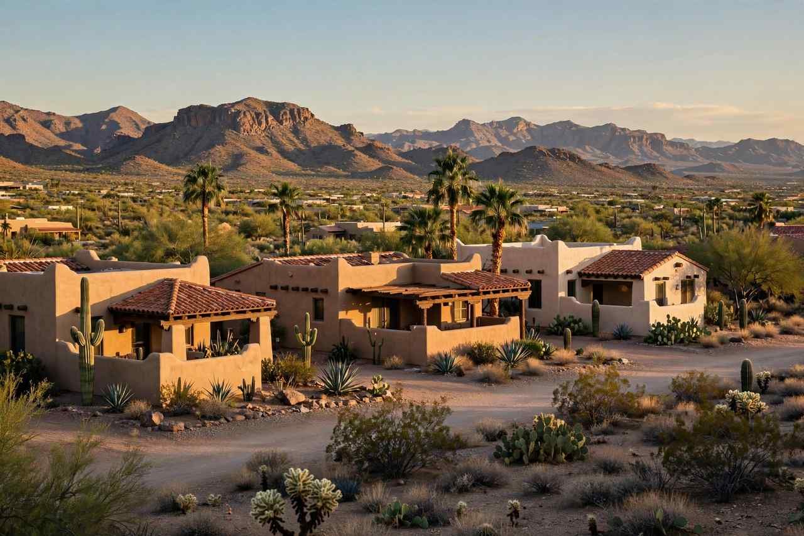

Rodent Control · Ash Fork, AZ
Licensed Rodent Control in Ash Fork, AZ
Rats in the attic or mice in the kitchen in Ash Fork? Murvo provides same-day rodent control with local crews who inspect first, remove the animals already inside, and seal the entry points they used. Every job is quoted flat-rate in writing before work begins and backed by a written guarantee, covering homes and businesses across Yavapai County. Service covers 1 ZIP codes across Yavapai County, including 86320, with same-day appointments where schedules allow.
24/7Availability
1ZIP codes covered
Same-dayResponse
Licensed · Upfront options · Written guarantees · Fully insured
Ash Fork at a glance
Local Rodent Control for Ash Fork, AZ.
Yavapai County
Countynorthern Arizona
RegionPeoria · 100 mi
Nearest metro125 miles north of Phoenix
From Phoenix1
ZIP codes covered Service by service in Ash Fork
Rodent Control Services Available in Ash Fork
Rodent-only specialists serving Ash Fork and Yavapai County. Every service below is explained in local terms - the species involved, the entry points that matter in desert-edge single-family homes, historic adobe and older in-town homes, and homes with irrigated citrus landscaping, and the seasonal timing that decides whether a fix lasts.
- 01Rodent Control↗
- 02Rodent Inspection↗
- 03Rodent Removal↗
- 04Rodent Exclusion↗
- 05Rodent Proofing↗
- 06Rat Control↗
- 07Mice Control↗
- 08Mouse Removal↗
- 09Rat Removal↗
- 10Rodent Trapping↗
- 11Rodent Baiting↗
- 12Rodenticide Application↗
- 13Attic Rodent Removal↗
- 14Crawl Space Rodent Removal↗
- 15Wall Rodent Removal↗
- 16Kitchen Rodent Control↗
- 17Garage Rodent Control↗
- 18Commercial Rodent Control↗
- 19Residential Rodent Control↗
- 20Emergency Rodent Removal↗
- 21Same-Day Rodent Control↗
- 22Rodent Damage Repair↗
- 23Rodent Waste Cleanup↗
- 24Rodent Disinfection↗
- 25Rodent Odor Removal↗
- 26Dead Rodent Removal↗
- 27Rodent Dropping Cleanup↗
- 28Rodent Exclusion for Roofs↗
- 29Rodent Exclusion for Vents↗
- 30Rodent Exclusion for Chimneys↗
Rodent Control in Ash Fork
Rodent Control in Ash Fork
A single mouse sighting in a Ash Fork kitchen rarely means a single mouse. Rodents breed fast, contaminate food areas, and gnaw wiring long before the damage is obvious. Murvo responds with same-day appointments where available, a background-checked local crew, and a coordinated program of trapping, exclusion, cleanup guidance, and monitoring that keeps working after the first visit ends.
Homeowners in Ash Fork call Murvo for rodent control because the problem here is specific: Pack rat (Neotoma spp.) pressure around desert-edge single-family homes, historic adobe and older in-town homes, and homes with irrigated citrus landscaping, tight access at rooflines and attic vents, garage gaps, AC and pool equipment enclosures, and openings around parked vehicles and stored items, and activity that follows the local season. Our Yavapai County crews diagnose the real source before recommending work, explain the options in plain language, and quote one flat rate in writing. Across Ash Fork - including Kaibab Estates West, Williams - every visit is backed by licensed, insured technicians and our written workmanship guarantee. Coverage for rodent control spans 1 ZIP codes in Yavapai County, including 86320.
The pattern in Yavapai County is predictable, so the response should be methodical. First comes identification, because Pack rat (Neotoma spp.) and Roof rat (Rattus rattus) nest and feed in different places. Traps then go where travel is proven, not where it is convenient, and catches are logged by location. Sealing follows only after activity drops, using materials matched to each opening. Finally, monitoring stays in place long enough to catch a late survivor or a new arrival, and those readings decide when the program closes. That discipline is what turns a busy first week into a genuinely quiet second month for the household.
Booking takes one call, and same-day appointments are available in most Ash Fork areas. Work is carried out in stages, with trap checks and sealing visits booked ahead. At the final visit we walk the finished work together and confirm monitoring is clear. Your technician inspects first, talks you through the plan in plain language, and only starts once you approve the written quote. Questions are answered at every stage, day or night.
In most of Ash Fork, we can offer a same-day appointment for rodent control, and our lines are open 24/7 for urgent cases like scratching in the walls or a rodent in a living area. Your technician inspects first, explains the plan, and quotes a flat rate in writing before any work begins, so help starts fast without surprises. In Yavapai County, activity follows the local season, so timing the work matters as much as the method.
Murvo does not quote rodent control sight unseen, because species, activity, and sealing needs change the work involved. After inspection you get one flat-rate written quote, and that is the figure you pay. As national context only, Angi's 2026 figures put rat and mouse removal and control at an average of $396, with a typical range of $189 to $655 — a benchmark, not a Murvo price.
Rodent Inspection in Ash Fork
Rodent Inspection in Ash Fork
What should you expect to hold afterwards? Photographs, a species identification, a map of entry points, and priorities you can act on in stages. That is a Murvo rodent inspection in Ash Fork: licensed and insured, unhurried, and honest about separating urgent problems from minor weaknesses that can safely wait.
When you need rodent inspection in Ash Fork, the job starts with what is actually happening in your part of Yavapai County. Murvo crews work Ash Fork every week, so they know how Pack rat (Neotoma spp.) and Roof rat (Rattus rattus) behave around desert-edge single-family homes, historic adobe and older in-town homes, and homes with irrigated citrus landscaping here - and where they get in: rooflines and attic vents, garage gaps, AC and pool equipment enclosures, and openings around parked vehicles and stored items. We arrive equipped for the full job, confirm the flat rate in writing before work begins, and cover the whole Ash Fork area, including Kaibab Estates West, Williams. No call-center runaround and no open-ended hourly billing - just a local crew, a clear plan, and a written quote you approve first. Seasonal timing matters for rodent inspection in Ash Fork: Rodents in Ash Fork peak twice: in attics during summer heat and again in winter.
The inspection starts outside, where we check the foundation, siding, pipe penetrations, garage doors, and roof junctions, because mice can squeeze through a gap the width of a pencil. Inside, we examine the attic, crawl space, insulation, stored items, and food areas for droppings, nests, rub marks, and gnaw damage. We also note where desert-edge single-family homes, historic adobe and older in-town homes, and homes with irrigated citrus landscaping create hidden routes through rooflines and attic vents, garage gaps, AC and pool equipment enclosures, and openings around parked vehicles and stored items. Every finding is photographed and explained, and recommendations are marked urgent or preventive so you can stage the work sensibly.
After booking, we confirm your time window by text or call. Before leaving, they review photos and priorities with you, leave the written findings, and schedule any follow-up work you approve. On arrival, your background-checked technician checks in, protects floors and access points, and works through a set inspection checklist inside and out. The inspection itself is backed by licensed, insured service and our written workmanship guarantee on quoted work.
You do not have to wait days for answers in Ash Fork. Same-day rodent inspection appointments are available in most areas, urgent calls are taken 24/7, and most home inspections take under an hour. You finish the visit with photos, written findings, and flat-rate pricing for anything we recommend. In Yavapai County, most cases involve the Pack rat (Neotoma spp.) and the Roof rat (Rattus rattus), so the inspection focuses on their routes first.
Nationally, a professional rodent inspection typically runs $100 to $200 according to Angi's 2026 data, and it is often credited toward the job if you proceed. Murvo confirms your exact rodent inspection price before the visit and quotes any follow-up work as a flat rate in writing after inspection, so the figure you approve is the figure you pay, with no hourly billing.
Rodent Removal in Ash Fork
Rodent Removal in Ash Fork
Finding droppings in the kitchen or hearing scratching overhead in Ash Fork means rodents are already living indoors, and they will not leave on their own. Murvo's rodent removal clears active Pack rat (Neotoma spp.) and Roof rat (Rattus rattus) with targeted trapping, removes animals hygienically, and closes the entry points behind them. One flat-rate written quote covers the program before work begins.
When you need rodent removal in Ash Fork, the job starts with what is actually happening in your part of Yavapai County. Murvo crews work Ash Fork every week, so they know how Pack rat (Neotoma spp.) and Roof rat (Rattus rattus) behave around desert-edge single-family homes, historic adobe and older in-town homes, and homes with irrigated citrus landscaping here - and where they get in: rooflines and attic vents, garage gaps, AC and pool equipment enclosures, and openings around parked vehicles and stored items. We arrive equipped for the full job, confirm the flat rate in writing before work begins, and cover the whole Ash Fork area, including Kaibab Estates West, Williams. No call-center runaround and no open-ended hourly billing - just a local crew, a clear plan, and a written quote you approve first. In Ash Fork, rodent removal calls most often involve desert-edge single-family homes, historic adobe and older in-town homes, and homes with irrigated citrus landscaping, where rooflines and attic vents, garage gaps, AC and pool equipment enclosures, and openings around parked vehicles and stored items decide whether the fix holds.
We favor trap-based, no-poison removal first where practical, which is safer around children and pets and avoids animals dying in hidden voids. Dead animals in inaccessible places are located and retrieved before odor develops, contaminated nesting material is removed, and sealing recommendations are prioritized so the route indoors closes permanently. Traps are matched to the species and setting, placed where droppings and rub marks show real travel routes, then cleared and reset until numbers reach zero. Monitoring then confirms the home stays clear.
Same-day removal appointments are available across much of Ash Fork for active infestations. Follow-up checks are booked before we leave, contaminated areas are made safe, and monitoring confirms the property is clear before we sign off. Every stage is explained in plain language as work proceeds. After a quick inspection, your background-checked technician explains the trapping plan and gives you a flat-rate written quote; work starts only with your approval. You keep copies of all visit records.
When rodents are active indoors in Ash Fork, waiting rarely helps. Rodent removal can usually start the same day you call, our line answers 24/7 for a rodent loose in a living area, and the first visit sets traps straight away. Scheduled returns then clear and reset them until monitoring shows the home is clear. The written quote for your Ash Fork property will spell out exactly which of these applies before any work starts.
Cost depends on the species, how many animals are active, and how much sealing the home needs afterwards, so Murvo inspects first and quotes one flat rate in writing. For national context only, Angi's 2026 data averages rat and mouse removal at $396, typically $189 to $655. That benchmark is not a Murvo price; your written quote is the exact figure.
Rodent Exclusion in Ash Fork
Rodent Exclusion in Ash Fork
In desert-edge single-family homes, historic adobe and older in-town homes, and homes with irrigated citrus landscaping, exclusion is detective work as much as building work. Rub marks at rooflines and attic vents, garage gaps, AC and pool equipment enclosures, and openings around parked vehicles and stored items, droppings below a vent, and daylight under a door each point somewhere different in Yavapai County homes. Our technicians follow those clues for Pack rat (Neotoma spp.) and Roof rat (Rattus rattus), prioritize active openings, and leave inactive weaknesses clearly noted.
Homeowners in Ash Fork call Murvo for rodent exclusion because the problem here is specific: Pack rat (Neotoma spp.) pressure around desert-edge single-family homes, historic adobe and older in-town homes, and homes with irrigated citrus landscaping, tight access at rooflines and attic vents, garage gaps, AC and pool equipment enclosures, and openings around parked vehicles and stored items, and activity that follows the local season. Our Yavapai County crews diagnose the real source before recommending work, explain the options in plain language, and quote one flat rate in writing. Across Ash Fork - including Kaibab Estates West, Williams - every visit is backed by licensed, insured technicians and our written workmanship guarantee. In Ash Fork, rodent exclusion calls most often involve desert-edge single-family homes, historic adobe and older in-town homes, and homes with irrigated citrus landscaping, where rooflines and attic vents, garage gaps, AC and pool equipment enclosures, and openings around parked vehicles and stored items decide whether the fix holds.
Start with a hard rule: nothing gets sealed while animals remain inside. Each opening receives its own treatment, from packed copper mesh in irregular gaps to hardware cloth across vents and flashing at roof junctions. Door sweeps close the obvious routes, and smaller cracks receive durable sealant chosen for exterior exposure. Technicians confirm the home is clear through trapping and monitoring, then survey the structure junction by junction, because seams between materials open as buildings settle. A written inventory ties each photograph to a location, so future checks can revisit precisely the same points.
Book the survey, and we will work around your schedule, including urgent openings near wiring or food storage. Approved work is completed opening by opening, photographed as it progresses, and reviewed with you before the visit ends. Your technician lists every gap found, explains which are active, and quotes the sealing as one written figure. The finished inventory lists every material used at every opening, which makes later inspections faster and keeps the guarantee easy to enforce.
Rodent exclusion in Ash Fork usually starts with a survey visit we can often schedule the same day you call. Sealing itself is booked as soon as any active animals are cleared, because nothing is sealed inside. Most homes are fully sealed within days, not weeks, and urgent entry points near wiring or food areas are prioritized first. Murvo's Ash Fork crews explain the finding either way, and the flat-rate quote leaves the decision with you.
For national context, Angi's 2026 data puts basic exclusion at $200 to $600, depending on access and the number of openings. That is a benchmark, not a Murvo price. After surveying your Ash Fork home, we list every opening that needs sealing and quote one flat rate in writing, so you pay for the work your property actually needs and nothing more.
Rodent Proofing in Ash Fork
Rodent Proofing in Ash Fork
The best rodent problem is the one that never starts. Rodent proofing in Ash Fork hardens your home before Pack rat (Neotoma spp.) and Roof rat (Rattus rattus) move in: sealing gaps, screening vents, fitting door sweeps, and removing the food and shelter that attract them. Murvo surveys the whole property, prioritizes the work, and gives one flat-rate written quote for the work.
In Ash Fork, rodent proofing is not a generic spray-and-go service. Rodents exploit rooflines and attic vents, garage gaps, AC and pool equipment enclosures, and openings around parked vehicles and stored items in desert-edge single-family homes, historic adobe and older in-town homes, and homes with irrigated citrus landscaping, and a fix that ignores those routes does not last. Murvo's Ash Fork team inspects first, shows you the evidence - droppings, gnaw marks, entry gaps - and then lays out the work with a flat-rate written quote. We serve all of Yavapai County from Ash Fork, including Kaibab Estates West, Williams, and every job is covered by our written workmanship guarantee. In Ash Fork, rodent proofing calls most often involve desert-edge single-family homes, historic adobe and older in-town homes, and homes with irrigated citrus landscaping, where rooflines and attic vents, garage gaps, AC and pool equipment enclosures, and openings around parked vehicles and stored items decide whether the fix holds.
Proofing starts with a whole-property assessment inside and out, from overhanging branches and cluttered garages to unsealed vents and gaps under doors. Every item is prioritized so essential work happens first. The plan typically combines structural sealing of utility entries and foundation cracks with mesh screening on vents, chimneys, and rooflines, plus door sweeps where light shows underneath. We also address attractants: securing pet food and bird seed storage, trimming vegetation away from walls, and clearing harborage. Photos show each weakness we find.
Book a rodent proofing survey in Ash Fork and we will arrange a visit time that suits your household, often the same day. Approved sealing is completed cleanly, then a seasonal re-check is scheduled. Your technician walks the property with you, photographs weak points, and explains the plan in plain language. You receive a flat-rate written quote separating essential from optional work. The finished work is fully guaranteed in writing by Murvo.
Rodent proofing is preventive, so there is rarely a rush, but surveys in Ash Fork can often be arranged the same day you call, and always within a few days. Most proofing work is completed in a single visit once you approve the plan, and booking before colder weather gives your home protection ahead of the seasonal rush indoors. In Yavapai County, activity follows the local season, so timing the work matters as much as the method.
We survey your Ash Fork property first, separate the quick wins you can handle yourself from the specialist sealing, and quote the professional work as one flat rate in writing so spending can be staged. Angi's 2026 national context puts exclusion, the core of proofing, at $200 to $600 for basic work — a benchmark only, not a Murvo price.
Rat Control in Ash Fork
Rat Control in Ash Fork
Most Ash Fork rat calls start with evidence in the attic: droppings too large for mice, greasy rub marks, insulation tunneled overnight. Murvo identifies whether Pack rat (Neotoma spp.) or Roof rat (Rattus rattus) is responsible, maps nightly routes, and builds control around trapping and exclusion. One flat-rate written quote is approved before work begins.
Homeowners in Ash Fork call Murvo for rat control because the problem here is specific: Pack rat (Neotoma spp.) pressure around desert-edge single-family homes, historic adobe and older in-town homes, and homes with irrigated citrus landscaping, tight access at rooflines and attic vents, garage gaps, AC and pool equipment enclosures, and openings around parked vehicles and stored items, and activity that follows the local season. Our Yavapai County crews diagnose the real source before recommending work, explain the options in plain language, and quote one flat rate in writing. Across Ash Fork - including Kaibab Estates West, Williams - every visit is backed by licensed, insured technicians and our written workmanship guarantee. The Ash Fork crews who handle rat control also handle the follow-through - proofing, cleanup, and monitoring - so one visit can close the whole problem.
We prioritize trapping and exclusion within an integrated program and offer no-poison options where suitable. Droppings areas are cleaned safely, never dry-swept, because disturbing dry droppings can spread contamination; surfaces are disinfected first, following CDC guidance. Monitoring devices then confirm the routes have gone quiet before we close the program. Where a site genuinely needs bait, it is placed only in tamper-resistant, locked stations positioned away from pets and food areas, and monitored on schedule. Every station is labeled, mapped, and recorded.
After booking, we confirm access to attics, basements, and outbuildings so the first visit is productive. Follow-up visits are booked ahead, trapped rats are removed promptly, and a final monitoring check verifies the result before sign-off under our written workmanship guarantee. On arrival, your background-checked technician walks the property with you, sets out the plan, and starts pre-baiting straight away once you approve the quote. You see documented progress at each visit.
Rats do not wait, and neither do we: rat control in Ash Fork can usually start with a same-day inspection, and urgent calls are answered 24/7. Pre-baiting begins on the first visit once you approve the written quote, traps are set as soon as rats are feeding confidently, and scheduled checks keep the program moving until activity stops. A Ash Fork inspection confirms it on site - dropping size, gnaw marks, and entry points tell the story quickly.
Rat work varies with species, colony size, and how many entry points need sealing, so Murvo inspects first and quotes one flat rate in writing. For national context only, Angi's 2026 data averages rat control and removal at $396, typically $189 to $655. That benchmark is not a Murvo price; the written quote for your Ash Fork home is the exact figure you pay.
Mice Control in Ash Fork
Mice Control in Ash Fork
Most Ash Fork mouse problems announce themselves in the kitchen first: droppings in a drawer, a chewed corner on stored food, movement behind the kickboard. Murvo surveys those hotspots, clusters traps where mice actually travel, seals gaps, and covers the program with one flat-rate written quote approved in advance.
Homeowners in Ash Fork call Murvo for mice control because the problem here is specific: Pack rat (Neotoma spp.) pressure around desert-edge single-family homes, historic adobe and older in-town homes, and homes with irrigated citrus landscaping, tight access at rooflines and attic vents, garage gaps, AC and pool equipment enclosures, and openings around parked vehicles and stored items, and activity that follows the local season. Our Yavapai County crews diagnose the real source before recommending work, explain the options in plain language, and quote one flat rate in writing. Across Ash Fork - including Kaibab Estates West, Williams - every visit is backed by licensed, insured technicians and our written workmanship guarantee. The Ash Fork crews who handle mice control also handle the follow-through - proofing, cleanup, and monitoring - so one visit can close the whole problem.
Hygiene is part of control, not an afterthought. Droppings in cabinets are never dry-swept; surfaces are disinfected first, following careful practice, so contamination is not pushed into the air, and nesting debris is bagged and removed. Technicians also review how food, pet supplies, and bird seed are stored, since an open supply restarts activity quickly. The program favors traps over bait throughout, which keeps family kitchens safer and makes every result countable and visible. Follow-up monitoring then verifies the kitchen, attic, and voids together, rather than treating each room in isolation.
During the program, store opened food in sealed containers and keep trap areas undisturbed. At the end you review the catch record together, receive prevention advice, and confirm the written guarantee before close. Your background-checked technician returns to clear and reset clusters, adjusts placements if the pattern shifts, and completes sealing once numbers fall. Prevention notes cover the exact storage and sealing issues found at your home, making them practical rather than generic advice.
Mice programs move quickly in Ash Fork: a mice control survey can often be arranged the same day you call, and traps are set on that first visit once you approve the quote. Because mice investigate new objects fast, catches usually begin quickly, and scheduled check visits follow until a final confirmation shows activity has fully stopped. A Ash Fork inspection confirms it on site - dropping size, gnaw marks, and entry points tell the story quickly.
The number of rooms affected and the amount of sealing required set the price, so Murvo surveys first and quotes one flat rate in writing. For national context only, Angi's 2026 data averages rat and mouse control and removal at $396, typically $189 to $655 — not a Murvo price; your written quote is exact.
Mouse Removal in Ash Fork
Mouse Removal in Ash Fork
Removal is only half the job in Yavapai County homes, because new mice follow the same scent trails and gaps within days. Murvo pairs trapping with droppings and nesting cleanup, safe disinfection, and proper exclusion sealing, all delivered by licensed, insured, background-checked technicians. For repeated problems, seasonal proofing checks sweeps and seals before the fall rush of mice seeking warmth.
In Ash Fork, mouse removal is not a generic spray-and-go service. Rodents exploit rooflines and attic vents, garage gaps, AC and pool equipment enclosures, and openings around parked vehicles and stored items in desert-edge single-family homes, historic adobe and older in-town homes, and homes with irrigated citrus landscaping, and a fix that ignores those routes does not last. Murvo's Ash Fork team inspects first, shows you the evidence - droppings, gnaw marks, entry gaps - and then lays out the work with a flat-rate written quote. We serve all of Yavapai County from Ash Fork, including Kaibab Estates West, Williams, and every job is covered by our written workmanship guarantee. Homes near Red Lake tend to show activity first in Ash Fork, which is why inspections start with rooflines and attic vents, garage gaps, AC and pool equipment enclosures, and openings around parked vehicles and stored items.
The survey comes first, and it is deliberately thorough. Lofts, under-floor voids, cabinets, and the spaces behind kitchen units are checked for nests, droppings, and stored food caches. Traps are then set in multiples at proven points, because a single trap rarely reflects colony size. Returns are scheduled tightly: catches are cleared, traps reset, and numbers tracked until they fall to zero and stay there across a confirming check before sealing begins. Photographs of nesting sites help here, because they reveal how far activity had spread before trapping began.
For urgent mouse problems in Ash Fork, contact Murvo for a same-day response where available. The final visit confirms the result and your written workmanship guarantee. Your technician surveys the home, explains the multi-trap plan, and confirms a flat-rate written quote before starting. Return visits are scheduled to clear and reset traps, and cleanup and sealing follow once catches reach zero. You are updated after every visit, without ever chasing us.
In Ash Fork, mouse removal can often begin the same day you call, especially where mice are active in kitchens or living areas. The first visit surveys nesting sites and sets traps immediately after you approve the quote; because mice investigate traps quickly, catches usually start fast, and return visits continue until numbers reach zero. If you are seeing signs now, an inspection this week is the fastest way to know which situation you are in.
Rooms involved and sealing needed determine the cost of removal, so we survey first and agree a flat rate in writing before work begins. As national context only, Angi's 2026 data averages rat and mouse removal at $396, with a typical range of $189 to $655; that benchmark is not a Murvo price, and your written quote covers your exact program.
Rat Removal in Ash Fork
Rat Removal in Ash Fork
In desert-edge single-family homes, historic adobe and older in-town homes, and homes with irrigated citrus landscaping, where rats enter decides how removal unfolds. Roof-level access through rooflines and attic vents, garage gaps, AC and pool equipment enclosures, and openings around parked vehicles and stored items points toward attic work; ground burrows suggest basements and drains across Yavapai County. Our licensed technicians trace the whole route for Pack rat (Neotoma spp.) and Roof rat (Rattus rattus), remove the colony, and sanitize areas where nests contaminated insulation or stored items.
Homeowners in Ash Fork call Murvo for rat removal because the problem here is specific: Pack rat (Neotoma spp.) pressure around desert-edge single-family homes, historic adobe and older in-town homes, and homes with irrigated citrus landscaping, tight access at rooflines and attic vents, garage gaps, AC and pool equipment enclosures, and openings around parked vehicles and stored items, and activity that follows the local season. Our Yavapai County crews diagnose the real source before recommending work, explain the options in plain language, and quote one flat rate in writing. Across Ash Fork - including Kaibab Estates West, Williams - every visit is backed by licensed, insured technicians and our written workmanship guarantee. The Ash Fork crews who handle rat removal also handle the follow-through - proofing, cleanup, and monitoring - so one visit can close the whole problem.
We lead with trapping and exclusion in an integrated, pet-conscious approach, using locked bait stations only where genuinely justified and monitored on schedule. Monitoring devices and a final walkthrough then provide documented evidence that activity has ended, and ongoing proofing keeps drains, vents, and rooflines checked afterwards. After clearance, contaminated insulation areas can be sanitized, and droppings are never dry-swept: following CDC guidance, surfaces are disinfected first before waste is removed. That evidence is always shared with you in writing.
Help the program by securing food, clearing access to the attic or basement, and leaving traps exactly where placed. Sign-off includes the documented evidence, your guarantee in writing, and practical proofing guidance tailored to how rats reached your property in the first place. Your background-checked technician handles removal, adjustments, sanitation, and the final monitoring period. You also receive guidance on drains, vegetation, and storage specific to your property, aimed at discouraging the next colony from settling.
Rats in a living area cannot wait for a routine slot. In Ash Fork, rat removal can usually start the same day you call and our line answers 24/7 for urgent cases. Pre-baiting starts on the first visit after you approve the written quote, traps are set once rats feed confidently — typically within days — and frequent returns run until monitoring confirms the colony is gone. If you are seeing signs now, an inspection this week is the fastest way to know which situation you are in.
Rat removal pricing depends on colony size, access, and the sealing needed afterwards, so Murvo assesses your property first and quotes a flat rate in writing. For national context only, Angi's 2026 data averages rat removal at $396, typically $189 to $655. That is a benchmark, not a Murvo price, and your written quote covers the full program described.
Rodent Trapping in Ash Fork
Rodent Trapping in Ash Fork
Good trapping is species craft, not guesswork. In Ash Fork, wary Pack rat (Neotoma spp.) need unset traps pre-baited for several days before they will feed confidently, while Roof rat (Rattus rattus) respond to clustered traps at activity hotspots. Our technicians match trap types and baits to the species and setting, from food lures in kitchens to robust devices for larger rats in basements.
In Ash Fork, rodent trapping is not a generic spray-and-go service. Rodents exploit rooflines and attic vents, garage gaps, AC and pool equipment enclosures, and openings around parked vehicles and stored items in desert-edge single-family homes, historic adobe and older in-town homes, and homes with irrigated citrus landscaping, and a fix that ignores those routes does not last. Murvo's Ash Fork team inspects first, shows you the evidence - droppings, gnaw marks, entry gaps - and then lays out the work with a flat-rate written quote. We serve all of Yavapai County from Ash Fork, including Kaibab Estates West, Williams, and every job is covered by our written workmanship guarantee. In Ash Fork, rodent trapping calls most often involve desert-edge single-family homes, historic adobe and older in-town homes, and homes with irrigated citrus landscaping, where rooflines and attic vents, garage gaps, AC and pool equipment enclosures, and openings around parked vehicles and stored items decide whether the fix holds.
A program opens with mapping, not trap placement. Devices are then selected for each location: snap traps for decisive results, multi-catch units on busy mouse routes, live-capture where release is preferred. For rats, pre-baiting runs several days before traps are set, the step most amateur attempts skip. Every device is numbered, recorded, and revisited on a fixed schedule. Technicians read droppings, rub marks, and gnaw damage to reconstruct nightly routes through attics, basements, and kitchens. The map also prevents a common mistake: removing a device that looks empty while its route is still active.
After booking, we confirm your time window and any pet or child considerations for trap placement. On arrival, your background-checked technician explains each device location and what to expect between visits. Follow-up checks are booked ahead, catches are removed promptly and hygienically, and placements are adjusted as the pattern changes. The program ends with a monitoring check and a clear written summary. You always know what was caught and where.
In Ash Fork, a rodent trapping program can usually start the same day you call, with traps placed or pre-baiting begun on the first visit after you approve the quote. Mice often investigate within the first night, while wary rats need a few days of pre-baiting before traps are set. Scheduled checks then keep the program moving until numbers reach zero. That is also why Murvo pairs removal with exclusion in Ash Fork - treating the animal without closing rooflines and attic vents, garage gaps, AC and pool equipment enclosures, and openings around parked vehicles and stored items rarely lasts.
Trapping is usually quoted as part of a complete removal program rather than by the trap, and the price depends on species, activity level, and how many check visits are needed. Murvo inspects first and quotes one flat rate in writing covering the program and its check visits, so there are no per-visit surprises and no hourly billing at any stage.
Rodent Baiting in Ash Fork
Rodent Baiting in Ash Fork
State rules shape how baiting works in Arizona: some states restrict anticoagulant rodenticides, and Murvo follows the strictest applicable limits on every job. Before any station is placed at your Ash Fork property, a technician maps activity, reviews pet and child concerns with you, and explains exactly what to watch for between monitoring visits. Nothing is placed without that conversation.
Homeowners in Ash Fork call Murvo for rodent baiting because the problem here is specific: Pack rat (Neotoma spp.) pressure around desert-edge single-family homes, historic adobe and older in-town homes, and homes with irrigated citrus landscaping, tight access at rooflines and attic vents, garage gaps, AC and pool equipment enclosures, and openings around parked vehicles and stored items, and activity that follows the local season. Our Yavapai County crews diagnose the real source before recommending work, explain the options in plain language, and quote one flat rate in writing. Across Ash Fork - including Kaibab Estates West, Williams - every visit is backed by licensed, insured technicians and our written workmanship guarantee. The Ash Fork crews who handle rodent baiting also handle the follow-through - proofing, cleanup, and monitoring - so one visit can close the whole problem.
Baiting here sits inside a wider sequence, never outside it. Exclusion work seals the structure, trapping clears animals already indoors, and only then do locked stations address the outdoor population along fence lines and runways. Each station is anchored, labeled, and photographed, with its location recorded. Monitoring visits log consumption precisely, and falling consumption, confirmed by other signs, decides when stations are reduced and finally removed altogether. Inspection maps activity and identifies where pressure originates. Those logs become especially important when activity fades, because several quiet checks must agree before stations come out.
Booking starts with a conversation about pets, children, and wildlife on your property, because that shapes placement before we arrive. Approved stations are installed locked and labeled that visit, with monitoring dates booked before we leave. The inspection visit maps activity, agrees each proposed station location with you, and confirms the written quote. Nothing about placement, product type, or monitoring frequency is left vague, and you can ask for the record at any point.
Deliberate setup matters more than speed with rodent baiting, but the first step is still fast: an inspection in Ash Fork can often be arranged the same day you call. Stations are placed only after activity is mapped and you approve the written quote and each location, then monitoring runs on a fixed schedule until consumption stops and activity is confirmed clear. That is also why Murvo pairs removal with exclusion in Ash Fork - treating the animal without closing rooflines and attic vents, garage gaps, AC and pool equipment enclosures, and openings around parked vehicles and stored items rarely lasts.
Baiting cost depends on how many locked stations your property needs and how long monitoring runs, so Murvo inspects and maps activity first, then quotes one flat rate in writing covering placement and scheduled checks. There are no per-visit surprises, and because our approach is exclusion-first, the goal is always to reduce and eventually remove stations, not maintain them forever.
Rodenticide Application in Ash Fork
Rodenticide Application in Ash Fork
Most Ash Fork applications begin with a conversation about why chemicals may not be needed at all. Murvo inspects first, leads with trapping and exclusion, and treats rodenticide application as a last resort for confirmed activity. If treatment proceeds, one flat-rate written quote covers locked stations, monitoring, and removal.
Homeowners in Ash Fork call Murvo for rodenticide application because the problem here is specific: Pack rat (Neotoma spp.) pressure around desert-edge single-family homes, historic adobe and older in-town homes, and homes with irrigated citrus landscaping, tight access at rooflines and attic vents, garage gaps, AC and pool equipment enclosures, and openings around parked vehicles and stored items, and activity that follows the local season. Our Yavapai County crews diagnose the real source before recommending work, explain the options in plain language, and quote one flat rate in writing. Across Ash Fork - including Kaibab Estates West, Williams - every visit is backed by licensed, insured technicians and our written workmanship guarantee. Homes near Red Lake tend to show activity first in Ash Fork, which is why inspections start with rooflines and attic vents, garage gaps, AC and pool equipment enclosures, and openings around parked vehicles and stored items.
Monitoring data guides the whole treatment: whether it continues, changes product, or stops entirely in favor of proofing alone. Dead rodents are retrieved promptly where accessible, stations are kept away from pet and child areas, and every product used is documented with its label and safety information, so nothing applied at your property is ever hidden from you. We prioritize sealing entry points with exclusion and physical removal so dependence on chemical control shrinks visit by visit. State restrictions are checked before product selection.
Start with the inspection, often bookable the same day, and expect alternatives explained before products are discussed. Application happens only after approval, with monitoring visits scheduled and a clear stopping point agreed in advance. Your licensed technician confirms whether treatment is justified, reviews safety information with you, and provides the written quote. You can pause or stop the program at any point, and stopping triggers removal of stations rather than leaving them behind unattended.
No responsible rodenticide application starts without an inspection, and in Ash Fork that inspection can often be scheduled the same day you call. If treatment is justified and you approve the written quote, locked stations are installed on that visit. Monitoring then runs on schedule, and treatment stops as soon as the data shows activity has ended. If you are seeing signs now, an inspection this week is the fastest way to know which situation you are in.
Application cost depends on the number of locked stations, the product required under Arizona rules, and how long monitoring runs. Murvo inspects first, explains whether trapping or exclusion could avoid chemical control entirely, and then quotes one flat rate in writing before work begins. The quote covers scheduled monitoring visits, so there are no per-visit surprises later.
Attic Rodent Removal in Ash Fork
Attic Rodent Removal in Ash Fork
When chewed wiring appears overhead, treat it as urgent; damaged cables are a real fire risk. Murvo prioritizes those Ash Fork attics, clears animals with targeted trapping rather than poison, leaves monitoring briefly after sealing to confirm nothing remains inside, and backs the finished work with a written workmanship guarantee.
Homeowners in Ash Fork call Murvo for attic rodent removal because the problem here is specific: Pack rat (Neotoma spp.) pressure around desert-edge single-family homes, historic adobe and older in-town homes, and homes with irrigated citrus landscaping, tight access at rooflines and attic vents, garage gaps, AC and pool equipment enclosures, and openings around parked vehicles and stored items, and activity that follows the local season. Our Yavapai County crews diagnose the real source before recommending work, explain the options in plain language, and quote one flat rate in writing. Across Ash Fork - including Kaibab Estates West, Williams - every visit is backed by licensed, insured technicians and our written workmanship guarantee. Seasonal timing matters for attic rodent removal in Ash Fork: Rodents in Ash Fork peak twice: in attics during summer heat and again in winter.
Cleanup overhead demands care. Contaminated insulation is assessed honestly, with repair referrals where replacement is warranted. Poison is avoided in attics deliberately, since animals dying in inaccessible corners create odor and retrieval problems. Adjoining crawl spaces are checked before the job is signed off as complete. Droppings and nesting material are never dry-swept, because that can spread contamination into the air; surfaces are disinfected first, then waste is removed hygienically by technicians in protective equipment. The result is a documented attic: cleared, sealed, cleaned where needed, and verified quiet before closure.
Book attic rodent removal in Ash Fork and we will arrange an attic visit, same-day where chewed wiring or heavy activity makes it urgent. Trapping checks follow on schedule, sealing and cleanup complete the job, and monitoring confirms the attic stays clear under guarantee. Your technician inspects the attic and roofline, shows you photographs of the evidence, and confirms a flat-rate written quote before removal begins. You approve every stage before it happens.
Overhead scratching in Ash Fork often gets a same-day attic rodent removal visit, and attics with chewed wiring are prioritized because of the fire risk. Trapping starts on the first visit once you approve the written quote, checks run on schedule, and most attics are cleared and sealed within days. Monitoring stays in place briefly afterwards to confirm nothing remains inside. Murvo's Ash Fork crews explain the finding either way, and the flat-rate quote leaves the decision with you.
Activity levels, roofline sealing, and whether contaminated insulation needs cleanup all affect attic pricing, so Murvo inspects first and quotes one flat rate in writing for the removal program. Cleanup options are priced separately in writing before you decide, so nothing is added once work is underway.
Crawl Space Rodent Removal in Ash Fork
Crawl Space Rodent Removal in Ash Fork
Why avoid poison beneath a home? Pets can access crawl spaces, and carcasses hidden under a house are difficult to retrieve. Murvo favors trapping and physical exclusion instead, delivered by licensed, insured technicians who photograph every sealed opening, refit access panels securely, and confirm results with monitoring under a written guarantee.
When you need crawl space rodent removal in Ash Fork, the job starts with what is actually happening in your part of Yavapai County. Murvo crews work Ash Fork every week, so they know how Pack rat (Neotoma spp.) and Roof rat (Rattus rattus) behave around desert-edge single-family homes, historic adobe and older in-town homes, and homes with irrigated citrus landscaping here - and where they get in: rooflines and attic vents, garage gaps, AC and pool equipment enclosures, and openings around parked vehicles and stored items. We arrive equipped for the full job, confirm the flat rate in writing before work begins, and cover the whole Ash Fork area, including Kaibab Estates West, Williams. No call-center runaround and no open-ended hourly billing - just a local crew, a clear plan, and a written quote you approve first. Seasonal timing matters for crawl space rodent removal in Ash Fork: Rodents in Ash Fork peak twice: in attics during summer heat and again in winter.
Cleanup beneath a home follows careful practice throughout. Droppings and nesting debris are never dry-swept, since disturbing them can spread contamination; surfaces are disinfected first, then waste is bagged and removed by technicians wearing protective equipment. Technicians also trace connections upward through wall voids, checking whether activity reaches the attic, and report moisture issues with practical recommendations. Photographs of every finished seal accompany your guarantee paperwork, creating a record of exactly what was closed. Vent and pier sealing is checked from inside the space, not assumed sound from a glance outside.
After booking, we confirm crawl-space access and any known leaks or standing water beneath the home. Follow-up visits are booked ahead for clearance and sealing. The job closes with a monitoring check and a walkthrough of the documented results together. On arrival, your background-checked technician inspects with protective equipment, sets traps at active areas, and talks you through the findings with photos. Every stage is approved by you before it proceeds.
For crawl space rodent removal in Ash Fork, inspections are usually arranged within a few days — and sooner when odors are drifting into living areas or activity sounds heavy. Trapping begins on the first visit after you approve the written quote, clearance and sealing follow in sequence, and monitoring stays in place until the space below is confirmed quiet. Around Ash Fork, desert-edge single-family homes, historic adobe and older in-town homes, and homes with irrigated citrus landscaping give rodents the most cover, which is why entry points get checked before traps are set.
Crawl-space costs depend on access, how many vents and gaps need sealing, and whether waste cleanup is required, so Murvo inspects first and quotes one flat rate in writing. If extra vents need sealing within the agreed scope, there are no surprises, and cleanup options are priced in writing before you decide whether to include them.
Wall Rodent Removal in Ash Fork
Wall Rodent Removal in Ash Fork
Most Ash Fork wall calls start at night, when scratching behind the drywall makes sleep impossible. Murvo locates the activity by listening, tracing entry routes, and using inspection cameras where access allows, then traps at void access points. A flat-rate written quote comes before any access work is considered.
Homeowners in Ash Fork call Murvo for wall rodent removal because the problem here is specific: Pack rat (Neotoma spp.) pressure around desert-edge single-family homes, historic adobe and older in-town homes, and homes with irrigated citrus landscaping, tight access at rooflines and attic vents, garage gaps, AC and pool equipment enclosures, and openings around parked vehicles and stored items, and activity that follows the local season. Our Yavapai County crews diagnose the real source before recommending work, explain the options in plain language, and quote one flat rate in writing. Across Ash Fork - including Kaibab Estates West, Williams - every visit is backed by licensed, insured technicians and our written workmanship guarantee. Homes near Red Lake tend to show activity first in Ash Fork, which is why inspections start with rooflines and attic vents, garage gaps, AC and pool equipment enclosures, and openings around parked vehicles and stored items.
Locating comes before everything else in wall work. Trapping is then placed at those access points to draw rodents out of the void. Checks follow on schedule, and placements shift if monitoring shows activity has moved into a connected void instead. Technicians listen at different points, note when noises occur, trace likely entry routes from roofline, baseboards, and pipe runs, and use cameras in accessible voids to confirm where animals travel and nest. Notes from each listening check are compared over time, turning faint, inconsistent sounds into a reliable activity pattern.
After booking, tell us when the noises happen; timing helps pinpoint the active void before we arrive. On the day, your background-checked technician listens, traces, and inspects with cameras where possible, then sets traps at access points once you approve the quote. Follow-up visits clear traps and run quiet-wall checks at different times of day. Sign-off happens only when monitoring confirms silence. Any access cut is agreed and made good neatly.
In Ash Fork, wall rodent removal locating visits are often available the same day you call, especially for persistent scratching keeping you awake. Trapping is set at access points on that first visit once you approve the written quote, and because rodents travel the void nightly, results usually follow within days, confirmed by quiet-wall checks before we sign off. Murvo's Ash Fork crews explain the finding either way, and the flat-rate quote leaves the decision with you.
Wall work pricing depends on how precisely activity can be located and whether a minimal access cut is needed, which is why Murvo locates the activity first and quotes a flat rate in writing. That way wall access work never becomes an open-ended bill, and the quote covers the trapping, sealing, and monitoring described in your plan.
Kitchen Rodent Control in Ash Fork
Kitchen Rodent Control in Ash Fork
Droppings in cabinets, gnawed packaging or grease marks along the kickboards mean Pack rat (Neotoma spp.) or Roof rat (Rattus rattus) are feeding where your family eats. Our kitchen rodent control in Ash Fork removes rodents safely, seals gaps behind appliances and pipes, and helps keep food preparation areas clean, hygienic and properly protected.
In Ash Fork, kitchen rodent control is not a generic spray-and-go service. Rodents exploit rooflines and attic vents, garage gaps, AC and pool equipment enclosures, and openings around parked vehicles and stored items in desert-edge single-family homes, historic adobe and older in-town homes, and homes with irrigated citrus landscaping, and a fix that ignores those routes does not last. Murvo's Ash Fork team inspects first, shows you the evidence - droppings, gnaw marks, entry gaps - and then lays out the work with a flat-rate written quote. We serve all of Yavapai County from Ash Fork, including Kaibab Estates West, Williams, and every job is covered by our written workmanship guarantee. Homes near Red Lake tend to show activity first in Ash Fork, which is why inspections start with rooflines and attic vents, garage gaps, AC and pool equipment enclosures, and openings around parked vehicles and stored items.
First we map the kitchen: droppings in drawers, gnaw marks on packaging, rub marks and the gaps rodents use around pipes and appliances. Because kitchen activity usually starts elsewhere, we follow routes into basements, garages and wall voids before treating the symptom alone. Entry gaps are sealed, contaminated surfaces disinfected, and simple food-storage changes agreed with you, such as sealed containers, fixed drips and crumbs cleared behind appliances. Trapping is discreet and positioned away from counters and food storage. Each stage is recorded on your written service report.
When you book, we agree an arrival window and any access needs around appliances. Afterwards we monitor, report what we find at each visit, and only close the job when activity has stopped. The guarantee on the work is provided in writing. On site, inspection comes first, then your written quote and plan. Approved work covers removal, sealing and disinfection, carried out by licensed and insured technicians. Your technician explains each visit before leaving the property.
Our phone lines are open 24/7, and kitchen cases involving droppings near food preparation areas are treated as a priority. In many Ash Fork cases we can arrange a same-day visit, subject to technician availability. Call, describe what you have found, and we will offer the earliest appointment we can. In Yavapai County, activity follows the local season, so timing the work matters as much as the method.
For national context, Angi's 2026 figures put rat extermination at $189-$655, averaging $396, but those figures are not Murvo prices. What your kitchen needs — trapping, sealing and follow-up monitoring — is assessed on site first. Murvo then provides one flat-rate written quote with no hourly billing, and work only begins after you approve it.
Garage Rodent Control in Ash Fork
Garage Rodent Control in Ash Fork
That torn seed bag in the corner matters more than it looks. Garages shelter Pack rat (Neotoma spp.) and Roof rat (Rattus rattus) close to stored food, soft nesting material and an easy path indoors. Murvo's garage rodent control in Ash Fork removes them, seals the door line and walls, and starts with a flat-rate written quote you approve first.
Homeowners in Ash Fork call Murvo for garage rodent control because the problem here is specific: Pack rat (Neotoma spp.) pressure around desert-edge single-family homes, historic adobe and older in-town homes, and homes with irrigated citrus landscaping, tight access at rooflines and attic vents, garage gaps, AC and pool equipment enclosures, and openings around parked vehicles and stored items, and activity that follows the local season. Our Yavapai County crews diagnose the real source before recommending work, explain the options in plain language, and quote one flat rate in writing. Across Ash Fork - including Kaibab Estates West, Williams - every visit is backed by licensed, insured technicians and our written workmanship guarantee. Coverage for garage rodent control spans 1 ZIP codes in Yavapai County, including 86320.
Inspection covers the garage door seal, corners, wall plates, stored boxes, pet food and bird seed, plus any holes where pipes or cables pass into the house. Entry points are then sealed with gnaw-resistant materials, the door bottom is proofed, and we advise on raised, sealed storage. Monitoring checks confirm activity has stopped before we finish. We identify the species from droppings and gnaw marks, set traps along the runways rodents actually use, and remove nesting material safely. Materials are chosen for durability, not the cheapest quick fix.
After booking, we agree access arrangements for vehicles and stored items. Your technician inspects, quotes in writing, and only starts once you approve. Removal, proofing and cleanup follow in a sensible order, so sealing never traps animals inside. Monitoring continues afterwards, and we report progress at each visit. If activity persists within the guarantee terms, we return and address it, as set out in your written guarantee. The plan is agreed with you before any work begins.
Our phones are answered 24/7, and garages with active nesting, damaged wiring or movement into the house are treated as urgent. Depending on technician schedules, a same-day appointment in Ash Fork is often possible. Describe the signs when you call and we will offer the earliest visit we can arrange. In Yavapai County, activity follows the local season, so timing the work matters as much as the method.
As a national benchmark, Angi's 2026 data shows rat extermination ranging from $189-$655, with an average of $396; that is context only, not a Murvo price. Garage work varies with size, activity and the proofing doors and walls require. After inspecting, Murvo quotes one flat rate in writing for trapping, nest removal, sealing and monitoring, for your approval before anything starts.
Commercial Rodent Control in Ash Fork
Commercial Rodent Control in Ash Fork
Stock loss is only part of the cost. Rodents in a warehouse or dining room threaten ratings, contracts and customer trust just as quickly. In Ash Fork, we build a practical program around your trading hours: find the pressure points, remove activity discreetly, seal the routes, and keep records your next audit can actually use.
When you need commercial rodent control in Ash Fork, the job starts with what is actually happening in your part of Yavapai County. Murvo crews work Ash Fork every week, so they know how Pack rat (Neotoma spp.) and Roof rat (Rattus rattus) behave around desert-edge single-family homes, historic adobe and older in-town homes, and homes with irrigated citrus landscaping here - and where they get in: rooflines and attic vents, garage gaps, AC and pool equipment enclosures, and openings around parked vehicles and stored items. We arrive equipped for the full job, confirm the flat rate in writing before work begins, and cover the whole Ash Fork area, including Kaibab Estates West, Williams. No call-center runaround and no open-ended hourly billing - just a local crew, a clear plan, and a written quote you approve first. Around Red Lake, Seligman, Paulden, the pattern is similar: Roof rat (Rattus rattus) finds rooflines and attic vents, garage gaps, AC and pool equipment enclosures, and openings around parked vehicles and stored items first, and lasting commercial rodent control has to close those routes.
Your program begins away from the shop floor, in the places rodents prefer: docks, plant rooms, bin stores, ceiling voids and delivery entrances. Monitored traps are positioned discreetly, outdoor stations stay locked, and product use is logged in full. Exclusion targets dock seals, vents and service gaps. We map activity there first, then connect it to sightings inside. After each visit you receive a clear report covering findings, actions and trends, written so a restaurant manager or warehouse operator can hand it straight to an auditor.
Booking starts with a site survey, not a sales pitch. Each visit ends with a written service report. Regular reviews check trend data together, and our written workmanship guarantee covers the exclusion work we install. We inspect, document the risks, and quote in writing, so you know exactly what the program covers. Technicians then carry out removal and exclusion work around your hours, keeping customers unaware of any disruption. Nothing starts until you have approved the written quote.
Commercial calls are taken 24/7, and a live sighting during trading is handled as an emergency with discretion to protect customers and reputation. The visit we can offer in Ash Fork depends on technician availability, and we will always give you the earliest one possible. We can also advise on immediate steps to protect stock and your audit position while you wait. Murvo's Ash Fork crews explain the finding either way, and the flat-rate quote leaves the decision with you.
For wider context, Angi's 2026 figures put rat extermination at $189-$655, averaging $396 nationally, though commercial sites are scoped individually and those figures are not Murvo prices. Site size, sector, activity and the exclusion and monitoring required all shape the cost. Murvo surveys first, then quotes a flat rate in writing for initial work or a clear scheduled-service price for an ongoing program, with reports included for your audit file.
Residential Rodent Control in Ash Fork
Residential Rodent Control in Ash Fork
Homes in desert-edge single-family homes, historic adobe and older in-town homes, and homes with irrigated citrus landscaping give rodents warmth, food and quiet nesting space. Our residential rodent control in Ash Fork starts with a thorough inspection, uses pet-conscious methods with no loose poison indoors, and backs the finished work with a written workmanship guarantee from licensed, insured technicians. Help is available around the clock, every day.
When you need residential rodent control in Ash Fork, the job starts with what is actually happening in your part of Yavapai County. Murvo crews work Ash Fork every week, so they know how Pack rat (Neotoma spp.) and Roof rat (Rattus rattus) behave around desert-edge single-family homes, historic adobe and older in-town homes, and homes with irrigated citrus landscaping here - and where they get in: rooflines and attic vents, garage gaps, AC and pool equipment enclosures, and openings around parked vehicles and stored items. We arrive equipped for the full job, confirm the flat rate in writing before work begins, and cover the whole Ash Fork area, including Kaibab Estates West, Williams. No call-center runaround and no open-ended hourly billing - just a local crew, a clear plan, and a written quote you approve first. Around Red Lake, Seligman, Paulden, the pattern is similar: Roof rat (Rattus rattus) finds rooflines and attic vents, garage gaps, AC and pool equipment enclosures, and openings around parked vehicles and stored items first, and lasting residential rodent control has to close those routes.
Instead of treating one room and hoping, we follow the connections: roof to wall void, garage to kitchen, crawl space to pipework. We note weak spots outside too, like overhanging branches or gaps under doors. That route map shapes everything that follows. Traps go on active lines, entry points get sealed once animals are out, and any soiled material is removed with proper cleaning. Monitoring continues after the main work, because quiet for a week means little unless repeat checks confirm it over time.
When you book, we note pets, children and access needs so the visit runs smoothly. We finish with prevention advice tailored to your home, and the guarantee covering the work is provided in writing. Your technician inspects, plans and quotes in writing before starting. Approved work removes the rodents, seals their entry points and cleans contaminated areas safely. Monitoring continues afterwards, with honest updates at every visit. The plan is agreed with you before any work begins.
We are available 24/7 by phone, and homes with rodents in living areas, kitchens or children's bedrooms are prioritized. Same-day visits in Ash Fork are often possible, subject to technician availability. Tell us what you have seen or heard, and we will offer the earliest appointment available and advise what to do meanwhile. Murvo's Ash Fork crews explain the finding either way, and the flat-rate quote leaves the decision with you.
Cost depends on the species, how established the infestation is, and how much exclusion and cleanup your home needs. Murvo inspects first, then quotes one flat rate in writing covering removal, sealing, cleaning and monitoring, with no hourly charges or add-on surprises. You approve the price before work begins, and everything is backed by our written workmanship guarantee.
Emergency Rodent Removal in Ash Fork
Emergency Rodent Removal in Ash Fork
Sudden sightings in desert-edge single-family homes, historic adobe and older in-town homes, and homes with irrigated citrus landscaping deserve a proper response, not just a trap dropped by the door. Our emergency rodent removal in Ash Fork combines urgent removal with a focused inspection of voids, attics and entry points like rooflines and attic vents, garage gaps, AC and pool equipment enclosures, and openings around parked vehicles and stored items. Help is available around the clock, and we will offer the earliest visit we can arrange.
When you need emergency rodent removal in Ash Fork, the job starts with what is actually happening in your part of Yavapai County. Murvo crews work Ash Fork every week, so they know how Pack rat (Neotoma spp.) and Roof rat (Rattus rattus) behave around desert-edge single-family homes, historic adobe and older in-town homes, and homes with irrigated citrus landscaping here - and where they get in: rooflines and attic vents, garage gaps, AC and pool equipment enclosures, and openings around parked vehicles and stored items. We arrive equipped for the full job, confirm the flat rate in writing before work begins, and cover the whole Ash Fork area, including Kaibab Estates West, Williams. No call-center runaround and no open-ended hourly billing - just a local crew, a clear plan, and a written quote you approve first. Homes near Red Lake tend to show activity first in Ash Fork, which is why inspections start with rooflines and attic vents, garage gaps, AC and pool equipment enclosures, and openings around parked vehicles and stored items.
Urgent removal still follows our full process, just faster at the front end. Inspection identifies species and scale, removal tackles the animals present, and exclusion stops replacements arriving. Where a rodent has died or nested indoors, cleanup and disinfection are arranged as part of the same plan. You are told honestly what has been completed, what needs a follow-up visit, and what to watch for, with everything recorded on your written quote and guarantee. The same careful standard applies on every single visit.
Start by closing the door on the affected room if you safely can. Once approved, work proceeds right away: the rodent is removed, entry points are secured, and affected surfaces are treated. When you ring, we note the details, agree a visit, and talk through simple precautions for the wait. At your door, inspection and a written quote come before any removal. Follow-up visits then verify the property has settled and no further animals remain inside.
Our lines are open 24/7, every day, and emergency calls in Ash Fork are triaged by risk, with live rodents in living areas, food contamination and chewed wiring prioritized. We will offer the earliest visit our technicians can reach and talk you through simple steps to keep everyone safe until we arrive. That is also why Murvo pairs removal with exclusion in Ash Fork - treating the animal without closing rooflines and attic vents, garage gaps, AC and pool equipment enclosures, and openings around parked vehicles and stored items rarely lasts.
Emergency pricing depends on where the rodents are, how many are involved, and what securing, cleanup or follow-up the property needs. Murvo inspects on arrival and quotes one flat rate in writing before work starts, with no hourly billing, even for urgent callouts. You approve the price first, and the work is backed by our written workmanship guarantee.
Same-Day Rodent Control in Ash Fork
Same-Day Rodent Control in Ash Fork
Waiting lets a small problem grow litters. If Pack rat (Neotoma spp.) or Roof rat (Rattus rattus) showed up this morning in your Ash Fork home or business, acting now limits damage and contamination. We will offer the earliest appointment available, start removal where activity is confirmed, and book the proofing and monitoring that make the result last beyond today.
When you need same-day rodent control in Ash Fork, the job starts with what is actually happening in your part of Yavapai County. Murvo crews work Ash Fork every week, so they know how Pack rat (Neotoma spp.) and Roof rat (Rattus rattus) behave around desert-edge single-family homes, historic adobe and older in-town homes, and homes with irrigated citrus landscaping here - and where they get in: rooflines and attic vents, garage gaps, AC and pool equipment enclosures, and openings around parked vehicles and stored items. We arrive equipped for the full job, confirm the flat rate in writing before work begins, and cover the whole Ash Fork area, including Kaibab Estates West, Williams. No call-center runaround and no open-ended hourly billing - just a local crew, a clear plan, and a written quote you approve first. Seasonal timing matters for same-day rodent control in Ash Fork: Rodents in Ash Fork peak twice: in attics during summer heat and again in winter.
Technicians combine immediate action with lasting proofing. The first visit removes pressure by setting traps and securing the most obvious gaps, while a full inspection maps every route rodents use around the building. Follow-up work completes exclusion, disinfects contaminated areas and verifies results through monitoring. This staged approach means same-day speed where it matters, without skipping the sealing and checking that make results permanent for Ash Fork homes and businesses. Safety of occupants and pets guides every method chosen. Nothing is left to guesswork at any stage.
After you book, keep pets away from affected areas and leave droppings undisturbed for inspection. If activity continues within the guarantee terms, we return and address it, exactly as set out in your written guarantee. Your technician assesses, quotes in writing and starts approved work immediately: traps set, key gaps secured, contaminated areas treated. Follow-up visits check traps, complete exclusion and confirm results. The plan is agreed with you before any work begins.
Calling early in the day gives the best chance of a same-day appointment in Ash Fork, subject to technician availability, and our lines are open 24/7. If today is fully booked, we will offer the next available visit instead. We will also suggest simple precautions you can take in the meantime. Around Ash Fork, desert-edge single-family homes, historic adobe and older in-town homes, and homes with irrigated citrus landscaping give rodents the most cover, which is why entry points get checked before traps are set.
Same-day work is priced the same fair way as any Murvo job: inspection first, then one flat-rate written quote based on species, activity levels and the exclusion and cleanup needed. There is no hourly billing and no premium surprise for speed. You approve the full price before treatment begins, and the work is backed by our written workmanship guarantee.
Rodent Damage Repair in Ash Fork
Rodent Damage Repair in Ash Fork
From chewed cables in the attic to gnawed door frames and damaged vents, rodent damage repair in Ash Fork restores the fabric of your home. Licensed, insured technicians assess every affected area, explain what genuinely needs repair, and back the finished work with a written workmanship guarantee. Background-checked technicians carry out every visit.
In Ash Fork, rodent damage repair is not a generic spray-and-go service. Rodents exploit rooflines and attic vents, garage gaps, AC and pool equipment enclosures, and openings around parked vehicles and stored items in desert-edge single-family homes, historic adobe and older in-town homes, and homes with irrigated citrus landscaping, and a fix that ignores those routes does not last. Murvo's Ash Fork team inspects first, shows you the evidence - droppings, gnaw marks, entry gaps - and then lays out the work with a flat-rate written quote. We serve all of Yavapai County from Ash Fork, including Kaibab Estates West, Williams, and every job is covered by our written workmanship guarantee. In Ash Fork, rodent damage repair calls most often involve desert-edge single-family homes, historic adobe and older in-town homes, and homes with irrigated citrus landscaping, where rooflines and attic vents, garage gaps, AC and pool equipment enclosures, and openings around parked vehicles and stored items decide whether the fix holds.
We document damage room by room, separating cosmetic marks from problems that affect safety, warmth or hygiene. Chewed wiring is treated as a fire risk and highlighted immediately. Insulation contaminated with urine and droppings is bagged and removed after disinfectant treatment, never handled dry. Replacement insulation is installed to the correct depth, gnawed entry holes are repaired and proofed, and damaged vent covers are replaced with rodent-resistant alternatives, leaving the space clean, sealed and restored. Each stage is recorded on your written service report.
Tell us where the damage looks worst when you book, whether that is the attic, a ceiling stain or wiring you are worried about. The technician assesses each area, photographs the findings, and quotes the agreed repair scope in writing. With approval, contaminated material is removed safely, repairs and replacement insulation follow, and openings are proofed as part of the same work. We review every finished area with you and note any trade checks we still recommend afterwards.
You can reach us by phone 24/7, and urgent safety concerns in Ash Fork, such as chewed wiring, are prioritized for assessment. Repair itself is scheduled once removal and exclusion are under way, so active rodents do not undo the work. Call, describe the damage you can see, and we will arrange the earliest suitable visit. In Yavapai County, most cases involve the Pack rat (Neotoma spp.) and the Roof rat (Rattus rattus), so the inspection focuses on their routes first.
For national context, Angi's 2026 figures show rat extermination ranging from $189-$655, with an average of $396; repair costs are separate and those figures are not Murvo prices. How much material is damaged, whether insulation needs replacing and how many entry points need repair and proofing all affect scope. Murvo assesses first, then quotes one flat rate in writing for the agreed work, with no hourly billing, for your approval before repairs begin.
Rodent Waste Cleanup in Ash Fork
Rodent Waste Cleanup in Ash Fork
Rodent waste can carry bacteria and viruses, including hantavirus, which becomes airborne when dried waste is disturbed. Murvo's rodent waste cleanup in Ash Fork handles attics, crawl spaces and living areas safely, bagging and removing contaminated material after disinfectant soaking. You approve a flat-rate written quote first. It is a complete service, not a quick spray.
When you need rodent waste cleanup in Ash Fork, the job starts with what is actually happening in your part of Yavapai County. Murvo crews work Ash Fork every week, so they know how Pack rat (Neotoma spp.) and Roof rat (Rattus rattus) behave around desert-edge single-family homes, historic adobe and older in-town homes, and homes with irrigated citrus landscaping here - and where they get in: rooflines and attic vents, garage gaps, AC and pool equipment enclosures, and openings around parked vehicles and stored items. We arrive equipped for the full job, confirm the flat rate in writing before work begins, and cover the whole Ash Fork area, including Kaibab Estates West, Williams. No call-center runaround and no open-ended hourly billing - just a local crew, a clear plan, and a written quote you approve first. Homes near Red Lake tend to show activity first in Ash Fork, which is why inspections start with rooflines and attic vents, garage gaps, AC and pool equipment enclosures, and openings around parked vehicles and stored items.
We begin by assessing the volume and location of contamination, from attic insulation to crawl space nesting. Where waste is mainly droppings in living areas, the same disinfect-first process applies, scaled to the rooms affected. After ventilation, every deposit is sprayed with disinfectant and allowed to sit before anything is touched. Only then is material carefully removed by hand in full PPE, sealed in bags and taken away. Hard surfaces are washed and disinfected again. Your technician explains each stage as the work progresses.
When you book, tell us where waste is worst, such as the attic or crawl space. We finish with reoccupation advice and a results check, all covered by the written workmanship guarantee. Your technician plans ventilation and access first, quotes in writing, and starts only with your approval. Waste is soaked, removed in full PPE and disposed of sealed, then surfaces are disinfected again. The plan is agreed with you before any work begins.
We answer 24/7 and prioritize heavy contamination in living areas, especially where children or pets are present. Availability in Ash Fork depends on technician schedules, but we will offer the earliest visit we can. Meanwhile, keep people and pets out of the area, ventilate if safe, and never dry-sweep or vacuum droppings. In Yavapai County, activity follows the local season, so timing the work matters as much as the method.
For national context, Angi's 2026 figures put rat extermination typically at $189-$655, averaging $396, though cleanup itself scales with how much contaminated material must be removed. Those are national figures, not Murvo prices. Murvo assesses the volume and location first, then quotes one flat rate in writing, so you approve the full cleanup cost before work begins.
Rodent Disinfection in Ash Fork
Rodent Disinfection in Ash Fork
Disinfection follows CDC-style caution every time: ventilate, soak contaminated areas with disinfectant, allow full dwell time, and never disturb dry waste. Murvo's rodent disinfection in Ash Fork treats the zones rodents actually used, with technicians in gloves and respiratory protection. A flat-rate written quote comes first. Call Murvo today for straightforward help.
When you need rodent disinfection in Ash Fork, the job starts with what is actually happening in your part of Yavapai County. Murvo crews work Ash Fork every week, so they know how Pack rat (Neotoma spp.) and Roof rat (Rattus rattus) behave around desert-edge single-family homes, historic adobe and older in-town homes, and homes with irrigated citrus landscaping here - and where they get in: rooflines and attic vents, garage gaps, AC and pool equipment enclosures, and openings around parked vehicles and stored items. We arrive equipped for the full job, confirm the flat rate in writing before work begins, and cover the whole Ash Fork area, including Kaibab Estates West, Williams. No call-center runaround and no open-ended hourly billing - just a local crew, a clear plan, and a written quote you approve first. In Ash Fork, rodent disinfection calls most often involve desert-edge single-family homes, historic adobe and older in-town homes, and homes with irrigated citrus landscaping, where rooflines and attic vents, garage gaps, AC and pool equipment enclosures, and openings around parked vehicles and stored items decide whether the fix holds.
The process targets both hygiene and behavior. Areas are ventilated before and after treatment, dwell times are respected, and technicians work in full PPE until surfaces are clean, treated and dry. Bacteria and potential viruses left in droppings and urine are treated at source, while the scent marking rodents rely on is broken down so the space stops advertising itself to replacements. Application follows removal and cleanup in sequence, and pairs with exclusion sealing. The same careful standard applies on every single visit.
Book treatment once removal and cleanup are underway, and tell us which areas worry you most. Areas are ventilated, disinfected and left for the full dwell time, with PPE worn throughout. Your technician confirms the treatment zones, explains the products and safety steps, and quotes the work in writing before starting. Once surfaces are dry, we walk the treated areas with you, confirm reoccupation timing, and note anything that pairs with upcoming sealing or odor work in your plan.
Treatment is usually arranged promptly, straight after removal and cleanup, so contaminated areas are not left untreated. Our phone line is available 24/7, and appointments in Ash Fork depend on technician availability. Call once rodents have been found or removed and we will book the earliest suitable visit and explain any precautions to take meanwhile. Around Ash Fork, desert-edge single-family homes, historic adobe and older in-town homes, and homes with irrigated citrus landscaping give rodents the most cover, which is why entry points get checked before traps are set.
For national context, Angi's 2026 data puts rat extermination typically at $189-$655, averaging $396; disinfection is normally a modest part of a full remediation program, not a Murvo price list. Murvo quotes disinfection as a flat rate in writing, scaled to the number and size of areas treated, never sold as a vague add-on. You approve the price before treatment begins.
Rodent Odor Removal in Ash Fork
Rodent Odor Removal in Ash Fork
Air fresheners lose this fight every time. When rodent smell has soaked into insulation or a wall void, covering it up changes nothing underneath. Murvo's rodent odor removal in Ash Fork hunts down the source, removes it safely, then neutralizes what remains. A flat-rate written quote comes after the source-finding inspection, before treatment work begins.
When you need rodent odor removal in Ash Fork, the job starts with what is actually happening in your part of Yavapai County. Murvo crews work Ash Fork every week, so they know how Pack rat (Neotoma spp.) and Roof rat (Rattus rattus) behave around desert-edge single-family homes, historic adobe and older in-town homes, and homes with irrigated citrus landscaping here - and where they get in: rooflines and attic vents, garage gaps, AC and pool equipment enclosures, and openings around parked vehicles and stored items. We arrive equipped for the full job, confirm the flat rate in writing before work begins, and cover the whole Ash Fork area, including Kaibab Estates West, Williams. No call-center runaround and no open-ended hourly billing - just a local crew, a clear plan, and a written quote you approve first. Coverage for rodent odor removal spans 1 ZIP codes in Yavapai County, including 86320.
We treat the three usual sources in turn: urine trails along runways, saturated nesting material, and dead animals in voids. Where a dead rodent is the cause, removal and disinfection of the exact location are included in the plan, and entry points are checked so it does not happen again. Contaminated insulation or debris is bagged and removed after disinfectant treatment. Hard surfaces are washed, disinfected and sealed or treated as appropriate, so odor cannot keep leaching out. Your technician explains each stage as the work progresses.
Booking starts with a source-finding inspection, not a spray. The source is then cleared in protective gear, the area disinfected, and treatment applied to affected materials. Ventilation advice is left with you, along with notes on any entry gaps found. On arrival we trace the odor through the rooms and voids you identified, confirm the cause, and agree the price in writing before any removal. If odor lingers beyond expectations, we will discuss the next options with you openly.
Odor work starts with an inspection visit, and we will offer the earliest appointment our Ash Fork technicians can reach; our calls are answered 24/7. A strong smell from a suspected dead rodent in a wall is prioritized where possible. While you wait, ventilate affected rooms and avoid disturbing any droppings or nesting you find. The written quote for your Ash Fork property will spell out exactly which of these applies before any work starts.
For national context, Angi's 2026 figures put rat extermination typically at $189-$655, averaging $396; odor work varies with the source and materials affected, and those figures are not Murvo prices. Murvo finds the source first, then quotes one flat rate in writing covering removal, disinfection and treatment. You approve the full price before work begins, under our written workmanship guarantee.
Dead Rodent Removal in Ash Fork
Dead Rodent Removal in Ash Fork
Finding the exact spot matters: cutting into the wrong wall wastes money and leaves the smell. Murvo technicians in Ash Fork use the odor pattern, fly activity and inspection access to pinpoint carcasses in wall voids, attics and crawl spaces, then remove and disinfect. Quotes are flat-rate and written.
In Ash Fork, dead rodent removal is not a generic spray-and-go service. Rodents exploit rooflines and attic vents, garage gaps, AC and pool equipment enclosures, and openings around parked vehicles and stored items in desert-edge single-family homes, historic adobe and older in-town homes, and homes with irrigated citrus landscaping, and a fix that ignores those routes does not last. Murvo's Ash Fork team inspects first, shows you the evidence - droppings, gnaw marks, entry gaps - and then lays out the work with a flat-rate written quote. We serve all of Yavapai County from Ash Fork, including Kaibab Estates West, Williams, and every job is covered by our written workmanship guarantee. Seasonal timing matters for dead rodent removal in Ash Fork: Rodents in Ash Fork peak twice: in attics during summer heat and again in winter.
Sometimes the answer is simpler: an animal in attic insulation or under floorboards that can be reached without opening a wall at all. Odor treatment follows disinfection at the exact location. We check those accessible places first. Removal includes contaminated material immediately around the carcass, removed after disinfectant treatment and disposed of sealed. Finally, we trace the probable entry route, since an animal that died indoors entered somehow, and we record any further live activity we notice so a removal plan can follow if needed.
After you book, avoid masking sprays if you can, as the natural odor pattern helps us locate the carcass. Your technician assesses, quotes in writing, and starts only with your approval. The carcass and contaminated material are removed sealed, surfaces disinfected, and entry routes checked. We review the result with you and record the findings. Everything completed is covered by the written workmanship guarantee. Your technician explains each visit before leaving the property.
We answer 24/7 and treat dead rodent calls as urgent, because odor and fly activity worsen quickly. In Ash Fork we will offer the earliest visit our technicians can reach. Tell us where the smell is strongest and when it began, and avoid masking sprays meanwhile, as the odor pattern helps location. If you are seeing signs now, an inspection this week is the fastest way to know which situation you are in.
Access makes the biggest difference: an open attic is simpler than a sealed wall void. Published guides citing Fixr put dead rodent removal typically at $150-$250 nationally, depending on access, but that range is not a Murvo price. Murvo locates the carcass first, then quotes one flat rate in writing covering removal and disinfection, which you approve before any work begins.
Rodent Dropping Cleanup in Ash Fork
Rodent Dropping Cleanup in Ash Fork
Those pellets behind the toaster are not something to sweep into a dustpan. Murvo's rodent dropping cleanup in Ash Fork removes droppings the safe way, following CDC guidance throughout, and starts with a flat-rate written quote after a careful assessment. Technicians work in gloves and respirators, and treated surfaces are disinfected again once deposits are removed.
Homeowners in Ash Fork call Murvo for rodent dropping cleanup because the problem here is specific: Pack rat (Neotoma spp.) pressure around desert-edge single-family homes, historic adobe and older in-town homes, and homes with irrigated citrus landscaping, tight access at rooflines and attic vents, garage gaps, AC and pool equipment enclosures, and openings around parked vehicles and stored items, and activity that follows the local season. Our Yavapai County crews diagnose the real source before recommending work, explain the options in plain language, and quote one flat rate in writing. Across Ash Fork - including Kaibab Estates West, Williams - every visit is backed by licensed, insured technicians and our written workmanship guarantee. In Ash Fork, rodent dropping cleanup calls most often involve desert-edge single-family homes, historic adobe and older in-town homes, and homes with irrigated citrus landscaping, where rooflines and attic vents, garage gaps, AC and pool equipment enclosures, and openings around parked vehicles and stored items decide whether the fix holds.
We also read the droppings as evidence while we clean. Cleanup is sequenced with removal, so deposits stop reappearing. Size and shape identify the species, quantity shows how established the infestation is, and positions along skirting, in cabinets or behind appliances map the routes our inspection team uses to plan trapping and sealing. Heavier contamination across whole spaces, such as attics full of nesting and waste, is handled under the same disinfect-first process, scaled up. Your technician explains each stage as the work progresses.
A single call arranges a safe assessment at your Ash Fork property. Technicians then work room by room: soak, dwell, remove, disinfect. Removed material leaves sealed, never carried loose through the house. On arrival, we check each affected room, confirm the written price, and set up ventilation before any cleaning starts. At the end, we advise when rooms can be used normally again and flag any fresh deposits to watch for, since new droppings would signal activity that still needs attention.
We answer 24/7 and will offer the earliest Ash Fork appointment our technicians can reach, prioritizing droppings in kitchens and living areas. Meanwhile, keep children and pets away from deposits, ventilate the room if you can do so safely, and do not sweep, brush or vacuum anything dry before we arrive. A Ash Fork inspection confirms it on site - dropping size, gnaw marks, and entry points tell the story quickly.
For national context, Angi's 2026 data puts rat extermination typically at $189-$655, averaging $396; dropping cleanup is normally a smaller, clearly itemised part of overall work, and those figures are not Murvo prices. Murvo assesses how many rooms are affected and how heavy deposits are, then quotes one flat rate in writing before cleanup begins.
Rodent Exclusion for Roofs in Ash Fork
Rodent Exclusion for Roofs in Ash Fork
Most attic infestations start at the roofline: lifted tiles, gaps at the eaves, broken vents and holes where pipes pass through. Our rodent exclusion for roofs in Ash Fork seals the roof properly with gnaw-resistant materials, so Pack rat (Neotoma spp.) and Roof rat (Rattus rattus) cannot climb in again. Licensed and insured, Murvo backs every job with a written workmanship guarantee.
In Ash Fork, rodent exclusion for roofs is not a generic spray-and-go service. Rodents exploit rooflines and attic vents, garage gaps, AC and pool equipment enclosures, and openings around parked vehicles and stored items in desert-edge single-family homes, historic adobe and older in-town homes, and homes with irrigated citrus landscaping, and a fix that ignores those routes does not last. Murvo's Ash Fork team inspects first, shows you the evidence - droppings, gnaw marks, entry gaps - and then lays out the work with a flat-rate written quote. We serve all of Yavapai County from Ash Fork, including Kaibab Estates West, Williams, and every job is covered by our written workmanship guarantee. In Ash Fork, rodent exclusion for roofs calls most often involve desert-edge single-family homes, historic adobe and older in-town homes, and homes with irrigated citrus landscaping, where rooflines and attic vents, garage gaps, AC and pool equipment enclosures, and openings around parked vehicles and stored items decide whether the fix holds.
Inside evidence and outside access must match, so the survey works from both directions: droppings and runways in the attic, then the corresponding gaps along eaves, ridge, flashing and penetrations outside. Animals are removed or confirmed out before sealing starts. Each opening then gets the material that fits it: copper mesh packed tightly around pipes and irregular shapes, hardware cloth fixed over larger openings where airflow must continue, and durable sealants finishing joints and flashing edges. Fixings are secured against wind and persistent gnawing alike.
When you book, tell us where noises or droppings are worst in the attic. Exclusion work then seals each entry point with durable materials, checked one by one. Follow-up monitoring confirms success, and if rodents breach our sealing within the guarantee terms, we return as set out in your written guarantee. Your technician plans safe roof access, inspects, and quotes in writing before starting. Your technician explains each visit before leaving the property.
Roof exclusion starts with a survey visit, and we will offer the earliest appointment our Ash Fork technicians can reach, with our lines open 24/7. Active attic infestations are prioritized where possible. Meanwhile, note where noises occur, and do not block roof gaps yourself, as rodents could be trapped inside. In Yavapai County, most cases involve the Pack rat (Neotoma spp.) and the Roof rat (Rattus rattus), so the inspection focuses on their routes first.
Roofline work varies with access, roof size and any damage found, so it is surveyed before it is priced. For national context, published guides put basic exclusion typically at $200-$600, but that range is not a Murvo price. Murvo then quotes one flat rate in writing for the agreed scope — copper mesh, hardware cloth, metal flashing and sealants as each point requires — and you approve the price before work begins.
Rodent Exclusion for Vents in Ash Fork
Rodent Exclusion for Vents in Ash Fork
A vent should move air, not animals. Yet torn screens and warped covers turn attic, dryer and crawl space vents into open entryways across Ash Fork. Murvo's rodent exclusion for vents fits sturdy mesh and metal covers that keep airflow working while rodents stay out, quoted as a flat-rate written quote after every vent has been inspected.
When you need rodent exclusion for vents in Ash Fork, the job starts with what is actually happening in your part of Yavapai County. Murvo crews work Ash Fork every week, so they know how Pack rat (Neotoma spp.) and Roof rat (Rattus rattus) behave around desert-edge single-family homes, historic adobe and older in-town homes, and homes with irrigated citrus landscaping here - and where they get in: rooflines and attic vents, garage gaps, AC and pool equipment enclosures, and openings around parked vehicles and stored items. We arrive equipped for the full job, confirm the flat rate in writing before work begins, and cover the whole Ash Fork area, including Kaibab Estates West, Williams. No call-center runaround and no open-ended hourly billing - just a local crew, a clear plan, and a written quote you approve first. Coverage for rodent exclusion for vents spans 1 ZIP codes in Yavapai County, including 86320.
The method is mesh, metal and methodical checking. Plastic screens and foam are never used as the barrier, because rodents chew both. Where vent covers are missing entirely, rodent-resistant metal covers are installed. The work is photographed and listed, so you can see exactly which vents were proofed. Technicians measure each vent, cut hardware cloth to size, fix it with screws and washers or into the frame, pack edges with copper mesh, and finish with exterior sealant. Safety of occupants and pets guides every method chosen.
Mention any vent where you have spotted droppings, nesting or a chewed screen when you book. Your technician works through every vent on the property, notes its condition, and quotes the agreed proofing in writing. After removal is complete or confirmed, fittings go in vent by vent: hardware cloth secured, copper mesh packed at edges, sealant finishing the joints. We test airflow together at the end and list exactly which vents were proofed, so nothing is left vague or unchecked.
Vent proofing is booked as a standard inspection visit, and we will offer the earliest appointment available in Ash Fork, with phone lines open 24/7. If rodents are actively coming through a vent into living areas, tell us when you call and we will prioritize where we can. Please do not tape vents shut meanwhile, as blocked airflow and trapped animals create new problems. That is also why Murvo pairs removal with exclusion in Ash Fork - treating the animal without closing rooflines and attic vents, garage gaps, AC and pool equipment enclosures, and openings around parked vehicles and stored items rarely lasts.
Vent work depends on how many vents need proofing, their sizes and how easily they can be reached. Published guides put basic exclusion typically at $200-$600 nationally, for context, but that is not a Murvo price. Murvo inspects every vent first, then quotes one flat rate in writing for fitting hardware cloth, copper mesh, metal covers and sealants as needed, for your approval before fitting begins.
Rodent Exclusion for Chimneys in Ash Fork
Rodent Exclusion for Chimneys in Ash Fork
Scratching, falling debris or droppings in the firebox often mean something is living in the chimney. Our rodent exclusion for chimneys in Ash Fork solves it properly: survey first, humane removal, then a fitted cap, crown repairs and flashing sealed. You approve a flat-rate written quote before work starts.
In Ash Fork, rodent exclusion for chimneys is not a generic spray-and-go service. Rodents exploit rooflines and attic vents, garage gaps, AC and pool equipment enclosures, and openings around parked vehicles and stored items in desert-edge single-family homes, historic adobe and older in-town homes, and homes with irrigated citrus landscaping, and a fix that ignores those routes does not last. Murvo's Ash Fork team inspects first, shows you the evidence - droppings, gnaw marks, entry gaps - and then lays out the work with a flat-rate written quote. We serve all of Yavapai County from Ash Fork, including Kaibab Estates West, Williams, and every job is covered by our written workmanship guarantee. In Ash Fork, rodent exclusion for chimneys calls most often involve desert-edge single-family homes, historic adobe and older in-town homes, and homes with irrigated citrus landscaping, where rooflines and attic vents, garage gaps, AC and pool equipment enclosures, and openings around parked vehicles and stored items decide whether the fix holds.
Inspection covers the cap or its absence, the crown, flue lining, damper area and the flashing where chimney meets roof. Any animals already inside are removed humanely first; nothing is ever capped in alive. We then fit a properly sized chimney cap with mesh sides, in stainless steel or galvanised metal, fixed securely to the flue or crown. Crown cracks are sealed, flashing gaps at the roofline are closed with appropriate materials and sealant, and the draw of a working fireplace is checked so the cap is draft-safe.
One call arranges the survey and any roof access needed. Approved work follows a set order: removal, clearing, precise cap fitting, and sealing around the base. Licensed, insured technicians complete the work and tidy the firebox area. On site, we explain the findings at the crown, flue and firebox, then confirm the full price in writing. You receive a record of the cap fitted and the gaps sealed, plus simple guidance on what to listen for if animals ever test the chimney again.
Chimney work begins with a survey visit, and we will offer the earliest appointment our Ash Fork technicians can reach, with lines open 24/7. If an animal is trapped or has fallen into the firebox, tell us when you call and we will prioritize where possible. Keep the damper closed and pets away from the fireplace meanwhile. If you are seeing signs now, an inspection this week is the fastest way to know which situation you are in.
For national context, published guides put basic exclusion typically at $200-$600 nationally, with chimney work varying by flue size, access and crown condition; that range is not a Murvo price. Murvo surveys the chimney first, then quotes one flat rate in writing covering the cap, fitting and flashing sealing. You approve the price before work begins, under our written guarantee.
Transparent Pricing
Rodent Control pricing in Ash Fork
Homeowners comparing prices in Ash Fork will see wide ranges, because scope varies more than headlines suggest. Murvo's approach is simple: inspect the property, then quote a single flat rate in writing, with no hourly billing. For context, national Angi 2026 data, based on 9,458 projects, averages $396 for a rat exterminator, typically $189 to $655, while inspections commonly run $100 to $200 and basic exclusion $200 to $600. Those figures are a benchmark only, not Murvo's prices.
| Service | Typical Range |
|---|---|
| Rodent Control | $189-$655 |
| Rodent Inspection | $100-$200 |
| Rodent Removal | $189-$655 |
| Rodent Exclusion | $200-$600 |
| Rodent Proofing | $200-$600 |
| Rat Control | $189-$655 |
| Mice Control | $189-$655 |
| Mouse Removal | $189-$655 |
| Rat Removal | $189-$655 |
| Rodent Trapping | $189-$655 |
| Rodent Baiting | $189-$655 |
| Rodenticide Application | $189-$655 |
| Attic Rodent Removal | $189-$655 |
| Crawl Space Rodent Removal | $189-$655 |
| Wall Rodent Removal | $189-$655 |
| Kitchen Rodent Control | $189-$655 |
| Garage Rodent Control | $189-$655 |
| Commercial Rodent Control | $189-$655 |
| Residential Rodent Control | $189-$655 |
| Emergency Rodent Removal | $189-$655 |
| Same-Day Rodent Control | $189-$655 |
| Rodent Damage Repair | $189-$655 |
| Rodent Waste Cleanup | $189-$655 |
| Rodent Disinfection | $189-$655 |
| Rodent Odor Removal | $189-$655 |
| Dead Rodent Removal | $150-$250 |
| Rodent Dropping Cleanup | $189-$655 |
| Rodent Exclusion for Roofs | $200-$600 |
| Rodent Exclusion for Vents | $200-$600 |
| Rodent Exclusion for Chimneys | $200-$600 |
The final price for a Ash Fork job reflects the work your property actually needs. Heavy infestations, multiple species, and long-established nesting cost more to clear than an early problem caught quickly. Entry-point count in desert-edge single-family homes, historic adobe and older in-town homes, and homes with irrigated citrus landscaping, how safely crews can reach the attic or crawl space, and how much cleanup and disinfection is required all change the scope. Rodents in Ash Fork peak twice: in attics during summer heat and again in winter, with monsoon rain from July through September displacing desert rodents toward homes. Pack rat activity around vehicles and yards in Yavapai County continues all year. Local demand may influence availability. Rather than estimate blindly, Murvo inspects, explains each factor, and quotes one flat rate in writing.
Our standard
Why Ash Fork Residents Trust Us
Local accountability across Yavapai County.
Code-Compliant
Murvo exclusion and repair work follows applicable codes and manufacturer guidance, so sealed entry points stay compliant, safe, and built to last.
Same-Day Service
When rodents are in living spaces, Murvo offers same-day appointments for inspection and removal, so the problem is assessed and contained promptly.
Upfront Pricing
Your quote is flat-rate and itemized in writing, covering the agreed inspection, removal, exclusion, and cleanup scope at the price you approved.
Licensed & Insured
Licensed, insured, and background-checked: every Arizona job is handled by vetted Murvo technicians, never day labor or unmarked subcontractors.
Ash Fork problem patterns
Common Rodent Control Problems in Ash Fork
The issues we fix most for Ash Fork homeowners, and why they happen here.
Pack rats in vehicles and AC equipment
Why it happens Pack rats in Ash Fork nest in engine compartments, AC units, and pool equipment, gnawing wiring and hoses and packing in cactus and debris. Desert-edge homes in Yavapai County with parked or stored vehicles are hit most often.
Our approach Murvo removes nests, traps pack rats around structures and vehicles, and seals equipment enclosures and garage gaps. We also lay out cover and debris changes that make the property less attractive to the next pack rat.
Roof rats in citrus and irrigated neighborhoods
Why it happens In irrigated parts of Ash Fork, roof rats feed on citrus, nest in palms and dense landscaping, and enter attics at the roofline. Older citrus lots in Yavapai County can support rats even in otherwise dry neighborhoods.
Our approach Murvo traps in attics and along roof travel routes, seals eaves and vents, and advises on citrus pickup and trimming. Exclusion is flat-rate and guaranteed after inspection.
Monsoon displacement and desert mice
Why it happens Monsoon storms from July through September flood washes and burrows in Yavapai County, pushing deer mice, pack rats, and other desert rodents toward homes in Ash Fork. Garages and sheds are usually the first shelter they find.
Our approach Murvo inspects after monsoon storms for new nests and entry gaps, removes displaced rodents, and seals garages and outbuildings. Cleanup of deer mouse droppings follows CDC wet-cleaning guidance.
Scratching and scurrying sounds inside walls
Why it happens Ash Fork homes frequently have wall voids that connect attics to lower floors, giving rodents a path through the structure. With very hot, dry summers heat, rodents travel through walls seeking cooler spots and wind up near living spaces.
Our approach We do a wall rodent removal using targeted traps and locate the entry point from the attic or crawl space. After removal, we close the gap and repair any insulation or drywall damage.
Early warning signsHave us take a look →
Signs You Need a Rodent Control Pro in Ash Fork
01Rice-sized droppings suggest mice; larger pellets suggest rats
02Pets staring, pawing, or barking at walls and appliances
03Torn food packaging with small teeth marks in pantries
04Small dark droppings along baseboards, cabinets, and attic insulation
05Scratching, scurrying, or chewing noises in walls at night
We know the route
Serving Every Corner of Ash Fork
We route efficiently across Yavapai County.
Downtown Ash Fork
Core Ash Fork coverage for apartments, restaurants, and homes near the center, focused on kitchens, basements, alleys, and service corridors.
The Williams corridor
Residential Ash Fork districts with family housing, where Murvo handles attic, wall, and garage infestations plus follow-up monitoring visits.
Greater Yavapai County
Surrounding Yavapai County communities served by the same local crews, with flat-rate written quotes and guaranteed exclusion wherever you are.
ASH FORK
AREA
MMMMMAREA
Primary Ash Fork response zone
Ash Fork service coverage
Ash Fork Neighborhoods & Areas We Serve
Murvo serves Ash Fork and communities across Yavapai County, providing rodent inspection, removal, exclusion, cleanup, and monitoring for homes and businesses. Wherever you are in the area, you get local crews, a flat-rate written quote, and guaranteed work.
86320
Popular neighborhoods
Check my address →
Kaibab Estates West · Williams · Red Lake · Seligman · Paulden · Parks · Chino Valley · Williamson
Reviews
What Ash Fork Customers Say
4.9★★★★★customer reviews
★★★★★
“Friendly and respectful crew that handled our mouse removal near Seligman. They used shoe covers, sanitized the area, and removed the waste. We could tell they cared about doing it right.”
GT
Grace T.Ash Fork
Review★★★★★
“Scheduling rat removal was easy and the crew showed up right on time. They removed the rats from our garage and sealed the gaps along the foundation. Excellent service across Yavapai County.”
OG
Olivia G.Seligman
Review★★★★★
“I called Murvo Rodent Control for emergency rodent removal in Ash Fork and they arrived within the hour. The tech trapped the rats in our attic, sealed the entry point, and disinfected the mess. Could not be happier with the quick service.”
MT
Marcus T.Ash Fork
Review Ash Fork through the year
Seasonal Rodent Control Tips for Ash Fork
Rodent pressure in Ash Fork follows the arid desert climate calendar. Here is what changes by season in Yavapai County, and what to do about it.
Spring
Spring is active breeding season for pack rats in Ash Fork, with nests expanding in yards, woodpiles, and equipment. Roof rats in irrigated areas of Yavapai County also raise young in attics as temperatures warm. In Ash Fork, the earliest signs usually show around Red Lake and similar desert-edge single-family homes, historic adobe and older in-town homes, and homes with irrigated citrus landscaping.
Tip Inspect vehicles, AC enclosures, and attics in spring, before summer heat and monsoon season.
Summer
Summer heat in Ash Fork pushes roof rats into attics and drives pack rats into shaded garages, equipment, and vehicles. Attic activity is a summer peak here, unlike colder regions in Yavapai County. In the 86320 ZIP codes, seasonal checks focus on rooflines and attic vents, garage gaps, AC and pool equipment enclosures, and openings around parked vehicles and stored items.
Tip Listen for attic noise on summer nights and check under vehicle hoods weekly if you park outside.
Fall
Fall citrus begins ripening in irrigated parts of Ash Fork, giving roof rats a strong food source close to roofs. Fallen fruit left on the ground supports rats all winter in Yavapai County. In the 86320 ZIP codes, seasonal checks focus on rooflines and attic vents, garage gaps, AC and pool equipment enclosures, and openings around parked vehicles and stored items.
Tip Pick and remove fallen citrus promptly in fall; fruit on the ground is a rat feeding station.
Winter
Winter is the second peak in Ash Fork, with pack rats seeking warmth in garages, vehicles, and wall voids and roof rats settled in attics. Visitor season in Yavapai County also fills rentals and second homes, adding reports. Homes around Red Lake, Seligman, Paulden tend to report activity first in Ash Fork.
Tip Check second homes and stored vehicles on arrival in winter; pack rats can damage wiring in a short stay.
Learn more
Rodent Safety & Prevention Resources for Ash Fork, AZ
Murvo follows integrated pest management and safe-cleanup guidance from federal health and environmental authorities. These resources explain rodent-borne disease prevention, safe droppings cleanup, and the exclusion methods that keep rodents out for good:
FAQs
Ash Fork Rodent Control FAQs
A real dispatcher is available if your question is not answered here.
Call (888) 842-2618 →Yes. Murvo runs 24/7 emergency rodent control in Ash Fork, with same-day appointments kept open for urgent problems - a rat in the kitchen, scratching in the walls at night, or a dead rodent odor. Call (888) 842-2618 any time and a real dispatcher will route the nearest Yavapai County crew. Emergency work is quoted flat-rate in writing before we begin, just like scheduled work.
It depends on species, infestation size, how many entry points need sealing, and whether cleanup is required. For national context, Angi's 2026 data puts a rat exterminator at $396 on average, typically $189 to $655. That is national data, not a Murvo price. Murvo inspects your Ash Fork property first, then quotes one flat rate in writing before any work begins, so the price you approve is the price you pay. Murvo's Ash Fork crews explain the finding either way, and the flat-rate quote leaves the decision with you.
Yes. Murvo Rodent Control is licensed and insured in Arizona, every technician is background-checked, and every Ash Fork job is backed by a written workmanship guarantee. If rodents return through an entry point we sealed, we come back under the guarantee terms - that is the difference between a treatment and a fix.
We serve Ash Fork and communities across Yavapai County, including Kaibab Estates West, Williams, Red Lake, Seligman, Paulden, Parks. Crews cover 1 ZIP codes in the Ash Fork area, and because the teams are local, routing is based on where you actually live - not a statewide dispatch queue. If you are just outside the listed areas, call (888) 842-2618 and we will confirm coverage for your address.
Very fast, which is why a small problem grows quietly. A female house mouse can produce multiple litters a year, each with several pups, and those pups can breed within weeks. In a Ash Fork home with food and shelter, a pair and their offspring can become dozens within a year. Early inspection matters: Murvo removes the active population, seals entry points, and monitors afterward so a surviving pair does not restart the cycle. If you are seeing signs now, an inspection this week is the fastest way to know which situation you are in.
An inspection and initial removal visit usually happen on the first appointment, but clearing an established infestation is a process, not a single moment. Trapping and monitoring continue until activity stops, and exclusion is completed once entry points are confirmed. Timelines in Ash Fork vary with species, access, and infestation size. Murvo sets expectations in writing at the quote stage and keeps monitoring until checks show the property is clear and sealed. In Yavapai County, activity follows the local season, so timing the work matters as much as the method.
Almost never. As long as food, water, and shelter remain available, rats and mice stay, breed, and expand into new voids and storage areas. DIY trapping may catch a few animals while the population replaces them through the same entry points. Lasting control in Ash Fork requires removing the active animals, sealing how they got in, and cleaning scent trails and nesting. That combination, not waiting, is what ends the cycle. Murvo's Ash Fork crews explain the finding either way, and the flat-rate quote leaves the decision with you.
Yes - every Ash Fork job comes with a written workmanship guarantee. If rodents get back in through an entry point Murvo sealed, we return and re-seal it under the guarantee terms. The guarantee is stated in writing on your quote before work begins, along with the flat rate, so there are no surprises about what is covered or what it costs.

Ash Fork dispatch is ready
Need Rodent Control in Ash Fork Today?
If you have found droppings, burrows, or chewed packaging in Ash Fork, call Murvo at (888) 842-2618. We will inspect, remove, exclude, and clean up, with one written flat-rate price approved by you before work begins.